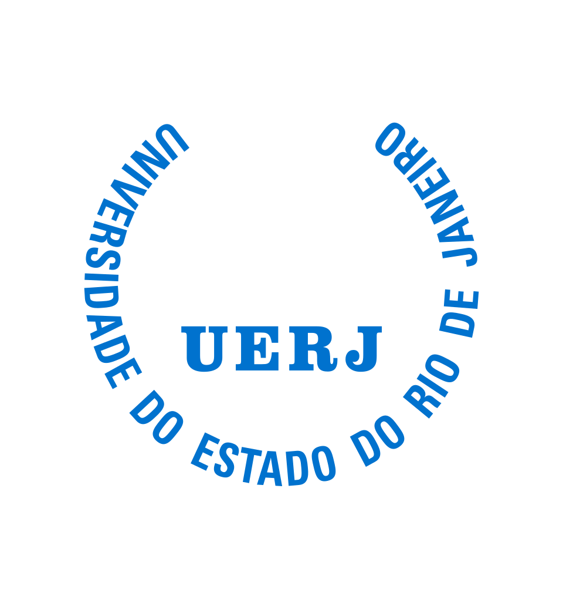

Núcleo permanente
Conteúdo em definição
A definir: descrição das perguntas repetidas a cada onda de pesquisa.
Itens originais preservados para revisão


Opinião pública · mídia · democracia
Observatório de Opinião Pública, Mídia e Democracia do Estado do Rio de Janeiro
Conheça a estrutura
A definir: parágrafo de apresentação do observatório — o que é, quem o realiza e para que serve.
A definir: os quatro eixos do observatório (território, escuta, leitura e tempo), com uma frase cada.
A definir: dois ou três parágrafos sobre a falta de pesquisa contínua de opinião pública sobre o estado do Rio de Janeiro, fora dos ciclos eleitorais e para além da capital, e sobre o uso desses dados na formulação de políticas públicas.
A definir: descrição das perguntas repetidas a cada onda de pesquisa.
A definir: descrição dos blocos de perguntas que mudam conforme a agenda pública.
A definir: descrição da leitura dos resultados por região do estado.
A definir: descrição dos métodos combinados — survey estadual, grupos focais, entrevistas, análise de mídias digitais e dados territoriais.
A definir: parágrafo curto explicando o que é um módulo temático.
A definir: descrição, perguntas de pesquisa e desenho metodológico.
A definir: descrição, perguntas de pesquisa e desenho metodológico.
A definir: descrição, perguntas de pesquisa e desenho metodológico.
A definir: descrição, perguntas de pesquisa e desenho metodológico.
A definir: descrição, perguntas de pesquisa e desenho metodológico.
A definir: descrição, perguntas de pesquisa e desenho metodológico.
A definir: descrição, perguntas de pesquisa e desenho metodológico.
A definir: descrição, perguntas de pesquisa e desenho metodológico.
A definir: descrição, perguntas de pesquisa e desenho metodológico.
A definir: explicação de como cada apoio financia um módulo com objeto, plano de trabalho, orçamento e entregas próprios, sobre uma infraestrutura de pesquisa compartilhada.
A definir: diagrama do núcleo comum e dos módulos.
Produtos previstos no protótipo; detalhamento e disponibilização ainda em definição.
A definir: lista dos produtos do observatório — relatórios por onda, boletins de resultados, painéis interativos, notas à imprensa, séries históricas e recortes territoriais.
A definir: cartão de resultado de exemplo, dentro de um bloco ilustrativo.

A definir: apresentação do LEMEP/IESP-UERJ e do INCT ID-ICED.
A definir: projetos anteriores do laboratório citados como credencial.
A definir: nomes e vínculos institucionais da equipe.
A definir: etapas do apoio por emenda parlamentar, da conversa inicial às entregas públicas.
A definir: se valores e cronograma aparecem na página e, em caso positivo, quais.
A definir: e-mail de contato do observatório.